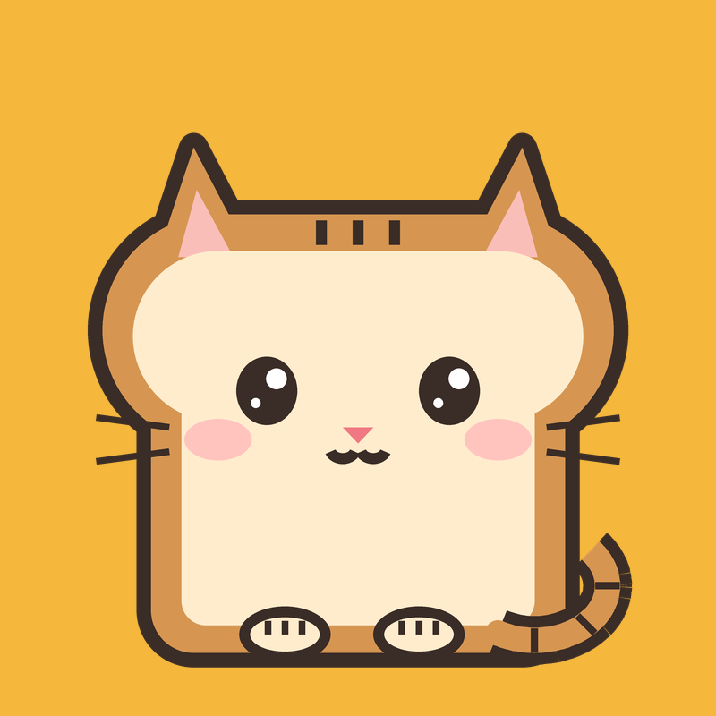

식빵 브리핑
Loaf Brief · YouTube @loafbrief
매주 월가와 실리콘밸리 사람들이 팟캐스트와 X에서 한 말을 원문으로 확인하고, 한국 수출·대만 월매출 같은 선행 데이터로 받아치는 채널입니다.
Each week we check what investors and chip/AI leaders said in podcasts and on X against the original source, then test it with leading data.
Loaf Brief Publisher
Loaf Brief Publisher is the channel's own tool. After the channel owner approves a finished video, it uploads that video to the 식빵 브리핑 YouTube channel as a private video, then (after the owner approves it) publishes it, with its title, description, thumbnail and captions. It is not offered to other users.
Part of the KOSPIcy group.